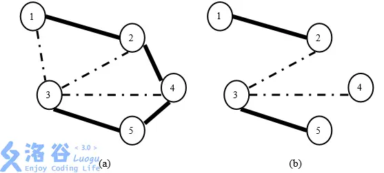

D07 最小生成树 Prim 算法_哔哩哔哩_bilibili
生成树¶
最小生成树¶
最小生成树
通俗的定义：用最小的代价构建一颗树。
-
性质 1 ：最大边权值尽量小
-
性质 2 ：对于 u 一 v 的路径，其中经过的最大边价值最小
算法1：Prim¶
Prim（普里姆）算法基于贪心思想的最小生成树（MST）算法。
e[u]存 u点的所有邻边的终点和边权。
d[u]存 u点与圈外邻点 的最小距离，vis[u]标记 u 点是否出圈。
算法流程类似 Dijkstra 算法，不断选距离最小的点出圈，直到圈内为空。
1.初始化，所有点都在圈（集合）内 vis=0, d[s]=0, d[其它点]=+∞。
2.每次从圈内选取一个距离最小的点 u，打标记移出圈。
3.对u的所有邻点的距离执行更新操作。
4.重复2,3步操作，直到圈内为空。
AC code
bool prim(int rt) { //起点
for (int i = 0; i <= n; i++) d[i] = INF;//把d[0]赋值为INF！！！
d[rt] = 0;
//初始化
for (int i = 1; i <= n; i++) {
int u = 0;//以0为基准，即初始d[0]=INF!!不要小聪明把0改成！
for (int j = 1; j <= n; j++) {
if (!vis[j] && d[j] < d[u])
u = j;
}
/*
或者写成
int u = 0;int mx=INF;
for (int j = 1; j <= n; j++) {
if (!vis[j] && d[j] < mx)
u = j,mx = d[j];
}
*/
// flag1
vis[u] = 1;
// cerr<<u<<' '<<d[u]<<"KO\n";
ans = max(ans, d[u]); //边权max
sum += d[u];//边权sum
if (d[u] != INF)
cnt++; //如果d[u] 在更新后依然为inf,说明不连通
for (auto ed : e[u]) {
int v = ed.v, w = ed.w;
if (d[v] > w)
d[v] = w;
}
}
return cnt == n; //判定是否存在最小生成树(图是否连通)
}

当走到3时，1已经在最小生成树内。此时枚举所有点发现3里最小生成树（1）最近，因此走到3处，连接1→3放入最小生成树中 [flag1]
此时枚举3的所有邻边，发现3→2最近（1忽略，因为它已经在最小生成树中了）现在先别急，不要现在确定2→3是最小生成树的边（因为虽然2是到3的最近的点，但还不知道有没有某个点到1的距离小于2→3的距离，毕竟1也在生成树内）。现在知道3在最小生成树内，于是更新其他点的d[]数组（即它们到最小生成树任意一个点的最小距离）为下面一个循环做准备
当到达点3时，会对d[2] d[5]进行更新，因为一开始它们与当前生成树无相连，d值为inf
但不会对d[4]进行更新，因为它在1时就已经更新了到生成树的距离，并且比到2的更近
总的流程就是找到离当前生成树最近的点v，建边，更新v的邻点到生成树的最小距离，直到生成树建完（扫描完所有点）
算法2：堆优化Prim（稀疏图适用）¶
Heap-Prim算法——用**优先队列**维护被更新的点的集合。
创建一个pair类型的大根堆q{-距离，点}，把距离取负值，距离最小的元素最大，一定在堆顶。
初始化，{0,s}入队，d[s]=0，d[其它点] =+∞；
从队头弹出距离最小的点u，若u扩展过则跳过，否则打标记；
对u的所有邻点的距离执行更新操作，把{-d[v],v}压入队尾；
重复2，3步操作，直到队列为空。
我们发现，在以下循环在，我们就是为了找到当前**不在已经处理出来的最小生成树中的点**中d[]**最小**的那个点。
int u=0;
for(int j=1;j<=n;j++){
if(!vis[j]&&d[j]<d[u])u=j;
}
不断找最小，对序列进行操作...优先队列可以优化它！这里请注意使用小根堆（存负数）
优先队列默认根据pair类型的第一项(.first)进行排序
priority_queue <pair<int,int> > pq;
bool prim(int s){//起点
for(int i=1;i<=n;i++)d[i]=INF;
d[s]=0;pq.push({-0,s});
//初始化
while(pq.size()){
int u=pq.top().second;pq.pop();
if(vis[u])continue;
/*代替了这些
int u=0;
for(int j=1;j<=n;j++){
if(!vis[j]&&d[j]<d[u])u=j;
}
*/
vis[u]=1;
ans+=d[u];//边权和
if(d[u]!=inf)cnt++;//如果d[u] 在更新后依然为inf,说明不连通
for(auto ed : e[u]){
int v=ed.v,w=ed.w;
if(d[v]>w)d[v]=w,pq.push({-d[v],v});//大根堆
}
}
return cnt==n;//判定是否存在最小生成树(图是否连通)
}
复杂度计算
同一个点的距离被更新多次，因为先前插入的元素不能被删除也不能被修改，只能留在优先队列中，故优先队列内的元素个数是O(m)的，push与pop操作是O(logm)的，所以时间复杂度为O(mlogm)。
算法3：Kruskal¶
312 最小生成树 Kruskal 算法_哔哩哔哩_bilibili
Kruskal(克鲁斯卡尔)算法利用**并查集**求最小生成树（MST）。
e[i]存第i条边的起点、终点与边权。
fa[x]存x点的父节点。
1.初始化并查集，把n个点放在n个独立的集合。
2.将所有的边按边权从小到大排序（贪心思想）。
3.按顺序枚举每一条边，如果这条边连接的两个点不在同一集合，就把这条边加入最小生成树，并且合并这两个集合；如果这条边连接的两个点在同一集合，就跳过。
4.重复执行3，直到选取了n-1条边为止。
struct edge{
int u,v,w;
}e[N];//注意不是链式前向星！！只是单纯存边！！编号从0开始！！
int fa[N],ans,cnt;
int find(int x){
if(fa[x]==x)return x;
return fa[x]=find(fa[x]);
}
bool cmp(edge a,edge b){
return a.w<b.w;//是小于号，因为小的要在前面
}
bool krskl(){
sort(e,e+m,cmp);//按边权排序
for(int i=1;i<=n;i++){
fa[i]=i;//并查集初始化
}
for(int i=0;i<m;i++){//按 边权从小到大顺序枚举
int x=find(e[i].u),y=find(e[i].v);
if(x!=y){//说明不在同一个集合
fa[x]=y;//连边
ans+=e[i].w;
cnt++;
}
}
return cnt==n-1; //返回是否连了n-1条边，即可以形成树
}
扩展：如果只是想连k条边，那么在cnt≥k时return即可。要想把图分成k个联通块使得边权和最小，则到cnt≥n（总点数，即最小生成树的边数）-k即return 可（P1195 口袋的天空）
总结

后面的2种适合稀疏图
例题 #1 [HAOI2006] 聪明的猴子¶
现在，在这个地区露出水面的有 \(N\) 棵树，假设每棵树本身的直径都很小，可以忽略不计。我们在这块区域上建立直角坐标系，则每一棵树的位置由其所对应的坐标表示(任意两棵树的坐标都不相同)。
在这个地区住着的猴子有 \(M\) 个，下雨时，它们都躲到了茂密高大的树冠中，没有被大水冲走。由于各个猴子的年龄不同、身体素质不同，它们跳跃的能力不同。有的猴子跳跃的距离比较远(当然也可以跳到较近的树上)，而有些猴子跳跃的距离就比较近。这些猴子非常聪明，它们通过目测就可以准确地判断出自己能否跳到对面的树上。
现已知猴子的数量及每一个猴子的最大跳跃距离，还知道露出水面的每一棵树的坐标，你的任务是统计有多少个猴子可以在这个地区露出水面的所有树冠上觅食。
输入格式
输入包括：
第 \(1\) 行为一个整数，表示猴子的个数 \(M\) \((2 \le M \le 500)\)；
第 \(2\) 行为 \(M\) 个整数，依次表示猴子的最大跳跃距离（每个整数值在 \(1 \sim 1000\) 之间）；
第 \(3\) 行为一个整数表示树的总棵数 \(N\) \((2 \le N \le 1000)\) ；
第 \(4\) 行至第 \(N+3\) 行为 \(N\) 棵树的坐标（横纵坐标均为整数，范围为：\(-1000 \sim 1000\)）。
（同一行的整数间用空格分开）
输出格式
输出包括一个整数，表示可以在这个地区的所有树冠上觅食的猴子数。
对于全部的数据，保证有 \(2 \le N \le 1000\)，\(1 \le M \le500\)
感谢 @charlie003 修正数据
/*
CB Ntsc
*/
#include<bits/stdc++.h>
using namespace std;
#define int long long
#define mp make_pair
const int N=1e6+5;
const int INF=1e9+5;
const int MOD=1e9+7;
bool f1;
int x[N],y[N],d[N],dis[N];
int q,n,m,ans,cnt,vis[N],T;
bool f2;
#define rd read()
inline int read()
{
int xx=0,ff=1;
char ch=getchar();
while(ch<'0'||ch>'9') {if(ch=='-') ff=-1;ch=getchar();}
while(ch>='0'&&ch<='9') xx=xx*10+(ch-'0'),ch=getchar();
return xx*ff;
}
inline void write(int out)
{
if(out<0) putchar('-'),out=-out;
if(out>9) write(out/10);
putchar(out%10+'0');
}
struct node{
int v,w;
};
vector <node> e[N];
void add(int a,int b,int c){
e[a].push_back({b,c});
e[b].push_back({a,c});
}
int cal(int a,int b){
return (x[a]-x[b])*(x[a]-x[b])+(y[a]-y[b])*(y[a]-y[b]);
}
bool prim(int rt) { //起点
for (int i = 0; i <= n; i++) d[i] = INF;
d[rt] = 0;
//初始化
for (int i = 1; i <= n; i++) {
int u = 0;
for (int j = 1; j <= n; j++) {
if (!vis[j] && d[j] < d[u])
u = j;
}
// flag1
vis[u] = 1;
// cerr<<u<<' '<<d[u]<<"KO\n";
ans = max(ans, d[u]); //边权和
if (d[u] != INF)
cnt++; //如果d[u] 在更新后依然为inf,说明不连通
for (auto ed : e[u]) {
int v = ed.v, w = ed.w;
if (d[v] > w)
d[v] = w;
}
}
return cnt == n; //判定是否存在最小生成树(图是否连通)
}
signed main(){
// freopen("chfran.in","r",stdin);
// freopen("chfran.out","w",stdout);
m=rd;
for(int i=1;i<=m;i++){dis[i]=rd;}
n=rd;
for(int i=1;i<=n;i++){
x[i]=rd;
y[i]=rd;
}
for(int i=1;i<=n;i++){
for(int j=1;j<i;j++){
add(i,j,cal(i,j));
}
}
prim(1);
cnt=0;
for(int i=1;i<=m;i++){
if(dis[i]*dis[i]>=ans)cnt++;
}
cout<<cnt<<endl;
return 0;
}
例题 #2 [APIO2008] 免费道路¶
题目描述
新亚（New Asia）王国有 N 个村庄，由 M 条道路连接。其中一些道路是鹅卵石路，而其它道路是水泥路。保持道路免费运行需要一大笔费用，并且看上去 王国不可能保持所有道路免费。为此亟待制定一个新的道路维护计划。
国王已决定保持尽可能少的道路免费，但是两个不同的村庄之间都应该一条且仅由一条 且仅由一条免费道路的路径连接。同时，虽然水泥路更适合现代交通的需 要，但国王也认为走在鹅卵石路上是一件有趣的事情。所以，国王决定保持刚好 K 条鹅卵石路免费。
举例来说，假定新亚王国的村庄和道路如图 3(a)所示。如果国王希望保持两 条鹅卵石路免费，那么可以如图 3(b)中那样保持道路(1, 2)、(2, 3)、(3, 4)和(3, 5) 免费。该方案满足了国王的要求，因为：(1)两个村庄之间都有一条由免费道 路组成的路径；(2)免费的道路已尽可能少；(3)方案中刚好有两条鹅卵石道路 (2, 3)和(3, 4)

图 3: (a)新亚王国中村庄和道路的一个示例。实线标注的是水泥路，虚线标注 的是鹅卵石路。(b)一个保持两条鹅卵石路免费的维护方案。图中仅标出了免 费道路。
给定一个关于新亚王国村庄和道路的述以及国王决定保持免费的鹅卵石 道路数目，写一个程序确定是否存在一个道路维护计划以满足国王的要求，如果 存在则任意输出一个方案。
输入格式
输入第一行包含三个由空格隔开的整数：
N，村庄的数目(1≤N≤20,000)；
M，道路的数目(1≤M≤100,000)；
K，国王希望保持免费的鹅卵石道路数目(0≤K≤N - 1)。
此后 M 行述了新亚王国的道路，编号分别为 1 到 M。第(i+1)行述了第 i 条 道路的情况。用 3 个由空格隔开的整数述：
ui 和 vi，为第 i 条道路连接的两个村庄的编号，村庄编号为 1 到 N；
ci，表示第 i 条道路的类型。ci = 0 表示第 i 条道路是鹅卵石路，ci = 1 表 示第 i 条道路是水泥路。
输入数据保证一对村庄之间至多有一条道路连接
输出格式
如果满足国王要求的道路维护方案不存在，你的程序应该在输出第一行打印 no solution。 否则，你的程序应该输出一个符合要求的道路维护方案，也就是保持免费的 道路列表。按照输入中给定的那样输出免费的道路。如果有多种合法方案，你可 以任意输出一种。
我们观察题意。可以知道免费的道路一定是一棵生成树。并且我们要在这颗生成树上有恰好k条鹅卵石路。
首先我们先按照水泥路优先的顺序排序，用kruskal求出最少需要几条鹅卵石路。此时判无解。
然后我们先把那些一定要选的鹅卵石路加入到生成树中，再按鹅卵石路优先的顺序跑最小生成树，补足k条鹅卵石路后跳过剩下的鹅卵石路。
// Problem: P3623 [APIO2008] 免费道路
// Contest: Luogu
// URL: https://www.luogu.com.cn/problem/P3623
// Memory Limit: 125 MB
// Time Limit: 1000 ms
//
//
//
#include<bits/stdc++.h>
using namespace std;
#define rd read()
#define ull unsigned long long
#define int long long
#define itn int
#define ps second
#define pf first
int read(){
int x;
cin>>x;
return x;
}
#define zerol = 1
#ifdef zerol
#define cdbg(x...) do { cerr << #x << " -> "; err(x); } while (0)
void err() {
cerr << endl;
}
template<template<typename...> class T, typename t, typename... A>
void err(T<t> a, A... x) {
for (auto v: a) cerr << v << ' ';
err(x...);
}
template<typename T, typename... A>
void err(T a, A... x) {
cerr << a << ' ';
err(x...);
}
#else
#define dbg(...)
#endif
const int N=3e5+5;
const ull P=137;
const int INF=1e9+7;
/*
策略
*/
struct edge{
int a,b,c;
}t[N],stk[N];
int K;
int top;
int n,m;
bool cmp(edge a,edge b){
return a.c>b.c;
}
bool cmp2(edge a,edge b){
return a.c<b.c;
}
int fa[N];
int find(int x){
if(x==fa[x])return x;
return fa[x]=find(fa[x]);
}
bitset<N> used;
int kruskal(){
int ans=0;
for(int i=1;i<=m;i++){
int faa=find(t[i].a);
int fbb=find(t[i].b);
if(faa==fbb)continue;
fa[faa]=fbb;
ans+=t[i].c;
if(t[i].c==0)used[i]=1;
}
return ans;
}
int kruskal2(){
int ans=0;
int cnt=0;
for(int i=1;i<=m;i++){
int faa=find(t[i].a);
int fbb=find(t[i].b);
if(faa==fbb)continue;
if(t[i].c==1||cnt<K){
fa[faa]=fbb;
if(t[i].c==-1)t[i].c=0;
if(t[i].c==0)cnt++;
ans+=1^t[i].c;
stk[++top]=t[i];
}
}
return cnt;
}
signed main(){
n=rd,m=rd;
K=rd;
for(int i=1;i<=m;i++){
t[i].a=rd;
t[i].b=rd;
t[i].c=rd;
}
for(int i=1;i<=n;i++)fa[i]=i;
sort(t+1,t+m+1,cmp);
kruskal();
if(used.count()>K){
puts("no solution");
return 0;
}
for(int i=1;i<=m;i++){
if(used[i]){
t[i].c=-1;
}
}
sort(t+1,t+m+1,cmp2);
for(int i=1;i<=n;i++)fa[i]=i;
if(kruskal2()<K){
puts("no solution");
return 0;
}
for(itn i=1;i<=top;i++){
cout<<stk[i].a<<' '<<stk[i].b<<' '<<stk[i].c<<endl;
}
}
练习 #1 Shichikuji and Power Grid¶
已知一个平面上有 \(n\) 个城市，需要个 \(n\) 个城市均通上电。 一个城市有电，必须在这个城市有发电站或者和一个有电的城市用电缆相连。
在一个城市建造发电站的代价是 \(c[i]\)，将 \(i\) 和 \(j\) 两个城市用电缆相连的代价是 \(k[i]+k[j]\) 乘上两者的曼哈顿距离。
求最小代价的方案。
建超级源点作为能量来源。
还有一种做法，就是先找到c最小的建厂，然后跑最小生成树。每次判定如何连边u→v时，要么直接连，要么v建厂，在两个里面选最小的即可，然后连边。这里维护的联通块指的是当前有电的点集。
/*
Keyblinds Guide
###################
@Ntsc 2024
- Ctrl+Alt+G then P : Enter luogu problem details
- Ctrl+Alt+B : Run all cases in CPH
- ctrl+D : choose this and dump to the next
- ctrl+Shift+L : choose all like this
- ctrl+K then ctrl+W: close all
- Alt+la/ra : move mouse to pre/nxt pos'
*/
#include <bits/stdc++.h>
#include <queue>
using namespace std;
#define rep(i, l, r) for (int i = l, END##i = r; i <= END##i; ++i)
#define per(i, r, l) for (int i = r, END##i = l; i >= END##i; --i)
#define pb push_back
#define mp make_pair
#define int long long
#define ull unsigned long long
#define pii pair<int, int>
#define ps second
#define pf first
// #define innt int
#define itn int
// #define inr intw
// #define mian main
// #define iont int
#define rd read()
int read(){
int xx = 0, ff = 1;
char ch = getchar();
while (ch < '0' || ch > '9') {
if (ch == '-')
ff = -1;
ch = getchar();
}
while (ch >= '0' && ch <= '9')
xx = xx * 10 + (ch - '0'), ch = getchar();
return xx * ff;
}
void write(int out) {
if (out < 0)
putchar('-'), out = -out;
if (out > 9)
write(out / 10);
putchar(out % 10 + '0');
}
#define ell dbg('\n')
const char el='\n';
const bool enable_dbg = 1;
template <typename T,typename... Args>
void dbg(T s,Args... args) {
if constexpr (enable_dbg){
cerr << s;
if(1)cerr<<' ';
if constexpr (sizeof...(Args))
dbg(args...);
}
}
#define zerol = 1
#ifdef zerol
#define cdbg(x...) do { cerr << #x << " -> "; err(x); } while (0)
void err() { cerr << endl; }
template<template<typename...> class T, typename t, typename... A>
void err(T<t> a, A... x) { for (auto v: a) cerr << v << ' '; err(x...); }
template<typename T, typename... A>
void err(T a, A... x) { cerr << a << ' '; err(x...); }
#else
#define dbg(...)
#endif
const int N = 3e5 + 5;
const int INF = 1e18;
const int M = 1e7;
const int MOD = 1e9 + 7;
/*
要么连边，要么它自己建仓
*/
priority_queue<pair<int,pii>> pq;
int x[N],y[N];
int c[N];
int d[N];
int K[N];
int ans;
bitset<N> vis;
int n;
pii ansE[N];
int top;
bitset<N>used;
int getDis(int a,int b){
return (K[a]+K[b])*(abs(x[a]-x[b])+abs(y[a]-y[b]));
}
void prim(){
memset(d,0x3f3f,sizeof d);
d[0]=0;
pq.push(mp(0,mp(0,0)));
while(pq.size()){
itn x=pq.top().ps.ps;
auto xx=pq.top();
pq.pop();
if(vis[x])continue;
vis[x]=1;
ans+=-xx.pf;
if(xx.ps.pf==0)used[x]=1;
else ansE[++top]=xx.ps;
d[x]=0;
for(int i=1;i<=n;i++){
if(vis[i])continue;
if(x==0)d[i]=min(d[i],c[i]);
else d[i]=d[x]+getDis(i,x);
pq.push(mp(-d[i],mp(x,i)));
}
}
}
void solve(){
n=rd;
for(int i=1; i<=n; i++){
x[i]=rd;
y[i]=rd;
}
for(int i=1;i<=n;i++){
c[i]=rd;
}
for(int i=1;i<=n;i++){
K[i]=rd;
}
prim();
used[0]=0;
cout<<ans<<endl;
cout<<used.count()<<endl;
for(int i=1;i<=n;i++){
if(used[i]){
cout<<i<<' ';
}
}
cout<<endl<<top<<endl;
for(int i=1;i<=top;i++){
cout<<ansE[i].pf<<' '<<ansE[i].ps<<endl;
}
}
signed main() {
// freopen(".in","r",stdin);
// freopen(".in","w",stdout);
int T=1;
while(T--){
solve();
}
return 0;
}
练习 #2 Power Tree¶
给定一棵 \(n\) 个点的有根树，\(1\) 为根。定义 \(u\) 为叶子当且仅当它**不是根**且度数为 \(1\)。
你可以选择花费 \(w_i\) 的代价控制点 \(i\)。当一个点 \(i\) 被控制时你可以选择给它的子树内的叶子的点权都加上一个自己选定的值 \(v_i\) 。你需要控制若干个点，使得花费的代价尽量少，且无论怎样规定所有叶子的初始点权，都可以通过调整你选择的点的值 \(v_i\) 来让所有叶子的点权变为 \(0\)。
输出格式
你需要输出最小代价和并构造**所有**最优选取方案的**并集**。
\(n\le 2\times 10^5\)。
最小生成树妙妙题~
注意题目中不是修改一整个子树的点权，而是修改**叶子节点**的点权。
看到题目很懵，我们也许会问：一个点被多少点覆盖，才能任意改变值呢？
首先本题不应该这样思考。我们考虑一棵子树对应一个dfn区间，那么选择一棵子树就是允许再一个区间内任意批量加减。
- 一个常用的trick：如果目的是将一个数组全部变成0，那么等效于将他的差分数组变成0
因此我们考虑现在的操作是花费\(c_i\)的代价，可以将 \(l_i\)任意加上数值k，\(r_i+1\)任意减去k。并且要求最后的[1,n]内是所有数值都可以为任意数值。
但是有一点麻烦的是，我们将\(l_i\)加上k后\(r_i+1\)会不受控制地减去k。如果我们每次区间修改都是发生在区间[l,n]上，那么好办，因为r+1就是n+1，我们不管差分数组n+1位的数字。但是这样很显然不一定最优。
那么我们考虑如何消除\(r_i+1\)处的影响呢？那么我们就再找一个区间\(l_j,r_j\)，使得\(l_j=r_i+1\)就好了！
最后我们传递到n+1即可。形式化地，我们可以把这种传递的每一个区间看成一条边。最后是要使得n+1与前面所有点都有连边即可。
// Problem: Power Tree
// Contest: Luogu
// URL: https://www.luogu.com.cn/problem/CF1120D
// Memory Limit: 250 MB
// Time Limit: 2000 ms
// Challenger: Erica N
#include<bits/stdc++.h>
using namespace std;
#define rd read()
#define ull unsigned long long
#define int long long
#define itn int
#define ps second
#define pb push_back
#define pf first
int read(){
int x;
cin>>x;
return x;
}
#define zerol = 1
#ifdef zerol
#define cdbg(x...) do { cerr << #x << " -> "; err(x); } while (0)
void err() {
cerr << endl;
}
template<template<typename...> class T, typename t, typename... A>
void err(T<t> a, A... x) {
for (auto v: a) cerr << v << ' ';
err(x...);
}
template<typename T, typename... A>
void err(T a, A... x) {
cerr << a << ' ';
err(x...);
}
#else
#define dbg(...)
#endif
const int N=3e6+5;
const ull P=137;
const int INF=1e9+7;
/*
策略
*/
int dfn[N];
int rdfn[N];
int tim;
int w[N];
vector<int> e[N];
struct edge{
int a,b,c;
int id;
}g[N];
int n;
int fa[N];
int find(int a){
if(fa[a]==a)return a;
return fa[a]=find(fa[a]);
}
void add(itn a,int b){
e[a].pb(b);
e[b].pb(a);
}
void addg(int a,int b,int c,int id){
g[id]={a,b,c,id};
// cerr<<a<<b<<c<<endl;
}
bool cmp(edge a,edge b){
return a.c<b.c;
}
void dfs(int x,int fa){
dfn[x]=tim+1;
int cnt=0;
for(auto v:e[x]){
if(v==fa)continue;
dfs(v,x);
cnt++;
}
if(!cnt)tim++;
rdfn[x]=tim;
addg(dfn[x],rdfn[x]+1,w[x],x);
}
bitset<N> used;
int kruskal(){
int ans=0;
int cur=0;
for(int i=1;i<=n;i++){
if(cur<i){
cur=i;
if(find(g[cur].a)!=find(g[cur].b))
used[g[cur].id]=1;
while(g[cur+1].c==g[cur].c){
cur++;
if(find(g[cur].a)!=find(g[cur].b))
used[g[cur].id]=1;
}
}
int a=g[i].a,b=g[i].b;
int faa=find(a),fbb=find(b);
if(faa==fbb)continue;
fa[faa]=fbb;
ans+=g[i].c;
}
return ans;
}
signed main(){
n=rd;
for(int i=1;i<=n;i++)w[i]=rd;
for(int i=1;i<n;i++){
add(rd,rd);
}
dfs(1,0);
for(int i=1;i<=n+1;i++){
fa[i]=i;
}
sort(g+1,g+n+1,cmp);
int ans=kruskal();
cout<<ans<<' '<<used.count()<<endl;
for(int i=1;i<=n;i++){
if(used[i]){
cout<<i<<' ';
}
}
}
动态最小生成树¶
n 个点 m 条边的图·每条边连接 u 一 i ， v 一 i ，权值 w 一 i·
两种操作：
-
修改某条边边权·
-
查询某个区间内的边构成的最小生成树
n≤100,m≤10000
solu
n 很小，猜测复杂度是 n * m * g。
线段树维护对于每个区间选哪几条边·合并的时候类似归并排序可以省去排序\(\log\)．时间复杂度 \(O(nq\log \times a(n))\)
异或最小生成树 Xor-MST¶
给你一张完全图，任意两个点之间的边权是 \(a_i \oplus a_j\)求最小生成树． n≤1e5
solu
trie树，在trie树上存所有数字，可以快速求出两个数字使得他们的异或和最小。
异或最小生成树·建 trie 树·合并两边只能各取一个点（怎么找？ trie 树经典问题）． Boruvka算法来证明
C¶
Borůvka 其实是一种多路增广的 prim。Prim 算法由一个点开始，往外不断贪心地找最短边，然后不断扩大连通块，直到形成一棵树。而 Borůvka 算法每一次的增广，会对现在的每一个连通块都找一遍的最短边，最后每个连通块择优，将这些边全部连上。
这个算法的有点是它**只需要 log N 次的合并**。
首先我们模拟一下Kruskal的流程：找到最小边，如果联通就忽略，未联通就加边
我们把所有点权值加入0−1 Trie中，然后画张图，可以发现有n−1个点是有两个儿子的，而其他点都是只有0/1个儿子
权值最小的边应该是Trie中，LCA深度最大的两个数
而且这n−1个节点是一些在Trie中结尾节点的LCA
所以我们只需要遍历整颗Trie，然后对所有可能为LCA的点，找到一条最小的边，把它的两颗子树合并起来即可
一个小trick:我们可以把所有元素排好序，因为Trie上的点从左往右看是递增的，于是Trie的每一个节点就会对应排好序的数列中的一段区间，这样就不需要启发式合并之类的复杂操作了
/*
Keyblinds Guide
###################
@Ntsc 2024
- Ctrl+Alt+G then P : Enter luogu problem details
- Ctrl+Alt+B : Run all cases in CPH
- ctrl+D : choose this and dump to the next
- ctrl+Shift+L : choose all like this
- ctrl+K then ctrl+W: close all
- Alt+la/ra : move mouse to pre/nxt pos'
*/
#include <bits/stdc++.h>
#include <queue>
using namespace std;
#define rep(i, l, r) for (int i = l, END##i = r; i <= END##i; ++i)
#define per(i, r, l) for (int i = r, END##i = l; i >= END##i; --i)
#define pb push_back
#define mp make_pair
#define int long long
#define pii pair<int, int>
#define ps second
#define pf first
// #define innt int
// #define inr int
// #define mian main
// #define iont int
#define rd read()
int read(){
int xx = 0, ff = 1;
char ch = getchar();
while (ch < '0' || ch > '9') {
if (ch == '-')
ff = -1;
ch = getchar();
}
while (ch >= '0' && ch <= '9')
xx = xx * 10 + (ch - '0'), ch = getchar();
return xx * ff;
}
void write(int out) {
if (out < 0)
putchar('-'), out = -out;
if (out > 9)
write(out / 10);
putchar(out % 10 + '0');
}
#define ell dbg('\n')
const char el='\n';
const bool enable_dbg = 1;
template <typename T,typename... Args>
void dbg(T s,Args... args) {
if constexpr (enable_dbg){
cerr << s << ' ';
if constexpr (sizeof...(Args))
dbg(args...);
}
}
const int N = 3e3 + 5;
const int INF = 1e18;
const int M = 1e7;
const int MOD = 1e9 + 7;
int dfn[N],rdfn[N];
int tot;
int a[N];
namespace Trie{
int ch[N][2];
void insert(int &cur,int x,int dep)
{
if(!cur) cur=++tot;
dfn[cur]=min(dfn[cur],x),rdfn[cur]=max(rdfn[cur],x);
if(dep<0) return;
int o=a[x]>>dep&1;
insert(ch[cur][o],x,dep-1);
}
int query(int cur,int v,int dep)
{
if(dep<0) return 0;
int o=v>>dep&1;
if(ch[cur][o]) return query(ch[cur][o],v,dep-1);
else return query(ch[cur][o^1],v,dep-1)+(1<<dep);
}
}using namespace Trie;
#define ls ch[x][0]
#define rs ch[x][1]
int rt;
int dfs(int x,int dep){
if(dep<0)return 0;
if(rdfn[ls]&&rdfn[rs]){
int mn=INF;
for(int i=dfn[ls];i<=rdfn[ls];i++){
mn=min(mn,query(rs,a[i],dep-1));
}
return dfs(ls,dep-1)+dfs(rs,dep-1)+mn+(1<<dep);
}
if(rdfn[ls])return dfs(ls,dep-1);
if(rdfn[rs])return dfs(rs,dep-1);
return 0;
}
signed main(){
int n=rd;
for(int i=1;i<=n;i++){
a[i]=rd;
}
sort(a+1,a+n+1);
memset(dfn,0x3f3f,sizeof dfn);
for(int i=1;i<=n;i++){
insert(rt,i,30);
}
cout<<dfs(rt,30)<<endl;
}
次小生成树¶
严格次小生成树算法¶
一句话概括：对于原图中非最小生成树的每一条边e:u-v，设其边权为w，查看最小生成树中u-v的路径上的边权最大值mx和次大值smx，如果mx=w，则用e替换smx的边，否则用e替换mx的边。
每一次替换边都是基于原图，所以每一次替换一条边后都会生成一颗新树。记新树的边权和为res，记录所有res中最小的那个就是**严格次小生成树。**
非严格次小生成树¶
稍微改变一下上面的条件，即无论mx是否对于w，都用e替换mx的边。即不需要记录smx了。
实现步骤¶
暴力算法：枚举最小生成树中哪条边不能选并且标记。每次标记后跑一次kruskal。但是排序只需要一次。\(O(m^2)\)
换边算法：
例题 #1¶
小 C 最近学了很多最小生成树的算法，Prim 算法、Kruskal 算法、消圈算法等等。正当小 C 洋洋得意之时，小 P 又来泼小 C 冷水了。小 P 说，让小 C 求出一个无向图的次小生成树，而且这个次小生成树还得是严格次小的，也就是说：如果最小生成树选择的边集是 \(E_M\)，严格次小生成树选择的边集是 \(E_S\)，那么需要满足：(\(value(e)\) 表示边 \(e\) 的权值) \(\sum_{e \in E_M}value(e)<\sum_{e \in E_S}value(e)\)。
这下小 C 蒙了，他找到了你，希望你帮他解决这个问题。
对于 \(100\%\) 的数据， \(N\le 10^5\)，\(M\le 3\times10^5\)，边权 \(\in [0,10^9]\)，数据保证必定存在严格次小生成树。
代码
人生啊，是没有尽头的啊。有些事，看似很好了，实际上为何不继续探查更多的可能性呢？
- 本题INF=1e12仍然不够，在没有涉及INF运算时，INF放心开1e18！
/*
Code by Ntsc
*/
#include<bits/stdc++.h>
using namespace std;
#define int long long
#define mp make_pair
#define rd read()
inline int rd
{
int xx=0,ff=1;
char ch=getchar();
while(ch<'0'||ch>'9') {if(ch=='-') ff=-1;ch=getchar();}
while(ch>='0'&&ch<='9') xx=xx*10+(ch-'0'),ch=getchar();
return xx*ff;
}
inline void write(int out)
{
if(out<0) putchar('-'),out=-out;
if(out>9) write(out/10);
putchar(out%10+'0');
}
const int N=5e5+5;
const int M=6e5+5;
const int INF=1e18;//开大INF！！！
int n,m,k,top,w1,c;
int used[N],fa[N][20],dep[N],w[N],du[N],stk[N],v[2][N];
int p[N],MSTans,cnt;
struct data{
int f,s;
}wt[N][20];
struct edge{
int u,v,w;
}e2[N];//注意不是链式前向星！！只是单纯存边！！编号从0开始！！
struct node{
int v,w;
};
vector<node> e[N];
data merge(data a,data b){
// cerr<<"about b:"<<b.f<<':'<<b.s<<endl;
//合并两个最大值
data ans=a;
if(b.f>ans.f){
ans.s=ans.f;ans.f=b.f;
if(b.s>ans.s)ans.s=b.s;
}else if(b.f>ans.s&&b.f!=ans.f)ans.s=b.f;
return ans;
}
void dfs(int x,int f){
dep[x]=dep[f]+1;
for(int i=1;i<=18;i++){
fa[x][i]=fa[fa[x][i-1]][i-1];
wt[x][i]=merge(wt[x][i-1],wt[fa[x][i-1]][i-1]);
}
for(auto v:e[x]){
if(v.v==fa[x][0])continue;
fa[v.v][0]=x;
wt[v.v][0]={v.w,0};
// cerr<<"v:"<<v.v<<' '<<wt[v.v][0].f<<endl;
dfs(v.v,x);
}
}
data query(int u, int v) {
data res={0,0};
if (dep[u] < dep[v])
swap(u, v); //让u更深
// res=merge(res,wt[u][0]);
for (int i = 18; i >= 0; i--) { //倍增往上跳 ，不要暴力跳
if (dep[u] - (1 << i) >= dep[v]){
// cerr<<"on merge"<<u<<' '<<i<<" wtth f:"<<wt[u][i].f<<endl;
res=merge(res,wt[u][i]),u = fa[u][i];//先跳u再改u！！
}
}
// cerr<<"u-v"<<u<<' '<<v<<" with res.f:"<<res.f<<endl;
if (u == v)
return res;
for (int i = 18; i >= 0; i--) { //倍增一起往上跳
if (fa[u][i] != fa[v][i]){
res=merge(res,wt[u][i]);
res=merge(res,wt[v][i]);
u = fa[u][i], v = fa[v][i];
}
}
res=merge(res,wt[u][0]);
res=merge(res,wt[v][0]);
return res; //注意返回值
}
int solve(){
int ans=INF;
for(int i=1;i<=m;i++){
//枚举非最小生成树边
if(used[i]){
// cerr<<"sel:";
// cerr<<e2[i].u<<" to "<<e2[i].v<<" with the w:"<<e2[i].w<<endl;
continue;
}
if(e2[i].u==e2[i].v)continue;//小心自环
data res=query(e2[i].u,e2[i].v);
if(e2[i].w!=res.f)ans=min(ans,MSTans-res.f+e2[i].w);
else if(res.s!=INF)ans=min(ans,MSTans-res.s+e2[i].w);
// cerr<<e2[i].u<<" to "<<e2[i].v<<" with the w:"<<e2[i].w<<"ans="<<ans<<" res.f:"<<res.f<<endl;
}
return ans;
}
void add(int a,int b,int c){
e[a].push_back({b,c});
e[b].push_back({a,c});
}
int find(int x){
if(p[x]==x)return x;
return p[x]=find(p[x]);
}
bool cmp(edge a,edge b){
return a.w<b.w;//是小于号，因为小的要在前面
}
bool krskl(){
sort(e2+1,e2+m+1,cmp);//按边权排序
for(int i=1;i<=n;i++){
p[i]=i;//并查集初始化
}
for(int i=1;i<=m;i++){//按 边权从小到大顺序枚举
int x=find(e2[i].u),y=find(e2[i].v);
if(x!=y){//说明不在同一个集合
p[x]=y;//连边
MSTans+=e2[i].w;
cnt++;
used[i]=1;
}
}
return cnt==n-1; //返回是否连了n-1条边，即可以形成树
}
signed main(){
// freopen("P4180_11.in","r",stdin);
n=rd,m=rd;
for(int i=1;i<=m;i++){
int a=rd,b=rd,c=rd;
e2[i]={a,b,c};
}
krskl();
for(int i=1;i<=m;i++){
if(used[i]){
add(e2[i].u,e2[i].v,e2[i].w);
}
}
// cerr<<"MSTans="<<MSTans<<endl;
dfs(1,0);
cout<<solve()<<endl;
}
/*
2 5
0 1 1 1 1
0 1 1 2 4
0 2 1 2 1
0 2 1 1 4
*/
最小生成树的唯一性问题¶
基于关键点的最小生成树¶


首先如果我们可以堆这道题中的关键点建出最小生成树，那么问题就迎刃而解了。
问题是如何求出关键点的最小生成树。
我们可以求出距每个点，最近的关键点near是哪个，且距离是多少。那么如果有一条边e
/* Erica N */
#include <bits/stdc++.h>
using namespace std;
#define pb push_back
#define mp make_pair
#define int long long
#define ull unsigned long long
#define pii pair<int, int>
#define ps second
#define pf first
#define itn int
#define rd read()
int read(){
int xx = 0, ff = 1;char ch = getchar();
while (ch < '0' || ch > '9') {if (ch == '-')ff = -1; ch = getchar();}
while (ch >= '0' && ch <= '9')xx = xx * 10 + (ch - '0'), ch = getchar();
return xx * ff;
}
#define cdbg(x...) do { cerr << #x << " -> "; err(x); } while (0)
void err() { cerr << endl; }
template<template<typename...> class T, typename t, typename... A>
void err(T<t> a, A... x) { for (auto v: a) cerr << v << ' '; err(x...); }
template<typename T, typename... A>
void err(T a, A... x) { cerr << a << ' '; err(x...); }
const int N = 1e6 + 5;
const int INF = 1e18;
const int M = 1e7;
const int MOD = 1e9 + 7;
struct node{
int v,w;
};vector<node> e[N];
void add(int a,int b,int c){
e[a].pb({b,c});
e[b].pb({a,c});
}
int c[N];
int near[N];
int n,s,m;
priority_queue<pii> pq;
int d[N];
bitset<N> vis,ans;
void djstr(){
memset(d,0x3f3f,sizeof d);
for(int i=1;i<=s;i++){
near[c[i]]=c[i];
d[c[i]]=0;
pq.push(mp(0,c[i]));
}
while(pq.size()){
int x=pq.top().ps;
pq.pop();
if(vis[x])continue;
vis[x]=1;
for(auto v:e[x]){
if(!vis[v.v]&&d[v.v]>d[x]+v.w){
d[v.v]=d[x]+v.w;
near[v.v]=near[x];
pq.push(mp(-d[v.v],v.v));
}
}
}
}
int fa[N];
int find(itn x){
if(fa[x]==x)return x;
return fa[x]=find(fa[x]);
}
struct edge{
int a,b,c;
int id;
}t[N],g[N],q[N];
int tot;
int tog;
bool cmp(edge a,edge b){
return a.c<b.c;
}
void addg(int a,int b,int c){
g[++tog]={a,b,c};
}
void kruskal(){
for(int i=1;i<=tot;i++){
int faa=find(t[i].a);
int fbb=find(t[i].b);
if(faa==fbb)continue;
fa[faa]=fbb;
addg(t[i].a,t[i].b,t[i].c);
}
}
void solve(){
n=rd,s=rd,m=rd;
for(int i=1;i<=s;i++){
c[i]=rd;
}
for(int i=1;i<=m;i++){
int a=rd,b=rd,c=rd;
add(a,b,c);
}
djstr();
for(int i=1;i<=n;i++){
// cdbg(i,near[i]);
for(auto v:e[i]){
if(near[i]==near[v.v])continue;
t[++tot]={near[i],near[v.v],d[i]+d[v.v]+v.w};
//注意开大空间 可能会这里爆
}
}
sort(t+1,t+tot+1,cmp);
for(int i=1;i<=n;i++){
fa[i]=i;
}
kruskal();
sort(g+1,g+tog+1,cmp);
int Q=rd;
for(int i=1;i<=Q;i++){
q[i]={rd,rd,rd,i};
}
sort(q+1,q+Q+1,cmp);
for(int i=1;i<=n;i++){
fa[i]=i;
}
int cur=0;
for(int i=1;i<=Q;i++){
while(cur<n&&g[cur+1].c<=q[i].c){
cur++;
fa[find(g[cur].a)]=find(g[cur].b);
}
if(find(q[i].a)==find(q[i].b))ans[q[i].id]=1;
}
for(int i=1;i<=Q;i++){
if(ans[i])puts("TAK");
else puts("NIE");
}
}
signed main() {
// freopen(".in","r",stdin);
// freopen(".out","w",stdout);
int T=1;
while(T--){
solve();
}
return 0;
}
最小生成树的变种¶
最小度限制生成树¶
P5633
给你一个有 \(n\) 个节点，\(m\) 条边的带权无向图，你需要求得一个生成树，使边权总和最小，且满足编号为 \(s\) 的节点正好连了 \(k\) 条边（仅一个点有限制）。
我们使用wqs二分对与节点s相连的边进行加权。详细题解见：
最小mex生成树¶
给定 \(n\) 个点 \(m\) 条边的无向连通图，边有边权。
设一个自然数集合 \(S\) 的 \(\text{mex}\) 为：最小的、没有出现在 \(S\) 中的自然数。
现在你要求出一个这个图的生成树，使得其边权集合的 \(\text{mex}\) 尽可能小。求最小值。
输入格式
第一行输入两个正整数 \(n,m\)。
接下来 \(m\) 行，每行 \(3\) 个非负整数 \(u,v,w\)，表示 \(u,v\) 之间有一条权值为 \(w\) 的边。
最小差值生成树¶
给定一个点标号从 \(1\) 到 \(n\) 的、有 \(m\) 条边的无向图，求边权最大值与最小值的差值最小的生成树。图可能存在自环。
输入格式
第一行有两个整数，表示图的点数 \(n\) 和边数 \(m\)。
接下来 \(m\) 行，每行三个整数 \(u, v, w\)，表示存在一条连接 \(u, v\) 长度为 \(w\) 的边。
- 对于 \(100\%\) 的数据，保证 \(1 \leq n \leq 5 \times 10^4\)，\(1 \leq m \leq 2 \times 10^5\)，\(1 \leq u, v \leq n\)，\(1 \leq w \leq 10^4\)。
最小瓶颈生成树 Arctic Network¶
给出一张图，求该图的最小瓶颈生成树。
瓶颈生成树：无向图\(G\)的一颗瓶颈生成树是这样的一颗生成树：它最大的边权值在\(G\)的所有生成树中是最小的。瓶颈生成树的值为\(T\)中最大权值边的权。
该图建立在坐标系中， 给出每个点的坐标。任意两点之间都有边，边权即为两点间的距离。
具体题面参考：https://www.luogu.com.cn/problem/P1991
考虑什么是最小瓶颈生成树。发现就是要求生成树的第T条边（从小到大排序后）的权值尽可能小。考察kruskal的流程，发现每个阶段我们都是尽可能选择了当前可以选的边权最小的边，并且构成了几个联通块。题目给出S条卫星链路（参考具体题目。实际上是S-1），这些边一定是替代生成树中最大的那几条边的。
因此发现kruskal的前P-1-S条边就是最后不被替代的那几条边。可以使用反证法证明。